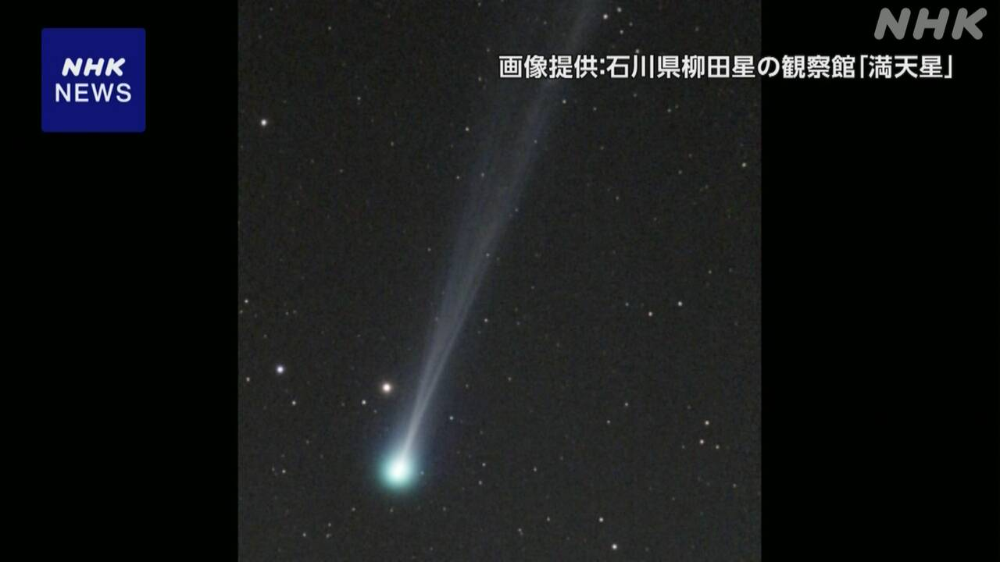

最新ニュース
1️⃣ 京都府 亡くなっていた人は小学生の安達結希さんとわかった
京都府南丹市の山で、13日人が亡くなっているのが見つかりました。
警察が調べると、14日この人は、どこにいるかわからなくなっていた小学生の安達結希さんとわかりました。
結希さんは、3月23日の朝、父親が車で学校に送ったあと、いなくなっていました。
結希さんが見つかった場所は、小学校から2kmぐらいの山の中でした。
結希さんはいなくなったときと同じ「84」という数字が書いてある服を着ていました。
靴ははいていませんでした。
警察は、結希さんが事件にあったのではないかと考えて、調べています。
2️⃣ アメリカ「イランの港に入る船はホルムズ海峡を通さない」
アメリカのトランプ大統領は、イランの港に入る船が、ホルムズ海峡を通ることができないようにしたと言いました。日本の時間の13日の夜11時に始めました。
アメリカの軍の船などが、ホルムズ海峡を通る船をチェックします。軍は、どの国もイランから原油を運ぶことはできなくなると言っています。
イランはアメリカに強く反発し、許すことができないと言っています。
たくさんの国が、困っています。そして、アメリカとイランに戦いを終わりにする話し合いを続けてほしいと考えています。
3️⃣ 熊本地震から10年 災害にあった人の健康を守ることが大切
2016年の4月、熊本県でとても大きい地震が2回ありました。
最初の大きい地震から、14日で10年です。
熊本県では、14日たくさんの人が亡くなった人たちのために祈りました。
熊本の地震では、熊本県と大分県で278人が亡くなりました。
その中の80%ぐらいは、地震のあとストレスなどで体の具合が悪くなって亡くなりました。
2年前の能登半島地震でも、たくさんの人が地震のあと、ストレスなどで亡くなっています。
この問題は今も残っています。
災害のとき、避難した人の生活をよくして健康を守ることが大切です。
4️⃣ 東の空 朝「すい星」を見ることができるかもしれない

空に見える星のニュースです。
去年見つかった「パンスターズすい星」という星が、いま地球に近づいています。
天文台によると、いま、このすい星は、日が出る前に東の空を見ると、低い所にあります。
空が晴れていて空気が綺麗だったら、目で見てわかるかもしれません。
今月15日から今月20日ぐらいまでが、いちばん見えやすくなります。
今月8日に東京で写真を撮った人は「目で見ることはできませんでしたが、写真ではうまく撮ることができました」と話していました。
- 〜ている / 〜でいる
- 〜から
- 〜後 / 〜あと
- 〜中
- 〜くらい / 〜ぐらい
- 〜という
- 〜ので
- 〜ではないか / 〜じゃないか
- 〜ことができる
- 〜ように
- 〜ようにする
- 〜こと
- 〜など
- 〜ても / 〜でも
- 〜ため
- 〜ため(に)
- 〜によると
- 〜前に
- 〜ところ
- 〜かもしれない / 〜かもしれません
- 〜てみる
- 〜まで
- 〜やすい
- 〜から〜まで
vebaev.github.io
Generated: 2026-04-14 13:46:06 UTC